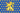
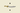
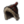
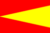
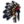
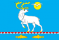
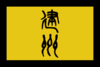
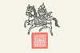
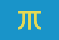

{kind=link}
| 中亞區域 | 费尔干纳 |
| 東西伯利亞區域 | 察夫楚万尼 楚科奇 堪察加 霍京 |
| 滿洲區域 | 赫哲 |
| 蒙古區域 | |
| 西藏區域 | 不丹 古格 |
| 西西伯利亞區域 | |
|
|
鞑靼大区（Tartary super-region）囊括了亚洲北部的广袤平原与错综的山脉。从小型的部落王国到巨大的游牧国家，无数氏族统治着这一地区。本大区有两个焦点区域。一是东侧的游牧国家，他们最终可能会成立  大清，反抗
大清，反抗  大明的区域性强权。二则是西侧的游牧国家，他们虽相互倾轧，纷争不休，却始终是高悬于东欧头上的达摩克里斯之剑。随着时间的流逝，西北的
大明的区域性强权。二则是西侧的游牧国家，他们虽相互倾轧，纷争不休，却始终是高悬于东欧头上的达摩克里斯之剑。随着时间的流逝，西北的  俄罗斯可能会崛起，将无论有主或无主的土地尽数划入自己的版图，直到彼侧的东洋之滨。
俄罗斯可能会崛起，将无论有主或无主的土地尽数划入自己的版图，直到彼侧的东洋之滨。
鞑靼大区的分解说明如下：
政府类型
宗教
科技组
文化组
部分国家在1444年并不存在，需要选择其它国家来成立它们，括号内年份为最早可在剧本中游玩的年份。
这些国家不存在于1444年开局中，通常也没有核心省份，但他们仍可以通过 分裂主义者叛军达成目标后控制他们文化的省份。除 布里亚特 都可以通过吐蕃任务“游牧制度”触发的事件选择变成对应国家。
| 中亞區域 | 费尔干纳 |
| 東西伯利亞區域 | 察夫楚万尼 楚科奇 堪察加 霍京 |
| 滿洲區域 | 赫哲 |
| 蒙古區域 | |
| 西藏區域 | 不丹 古格 |
| 西西伯利亞區域 | |
| 埃及区域 | |
| 几内亚区域 | |
| 非洲之角区域 | |
| 马格里布区域 | 创建缩略图出错：文件丢失 得土安 |
| 尼日尔区域 | 阿散蒂 博诺曼 达格邦 |
| 萨赫勒区域 | |
| 中非区域 | |
| 东非区域 | |
| 刚果区域 | 卡桑吉 |
| 南非区域 | |
| 不列颠区域 | |
| 法兰西区域 | 阿朗松 阿马尼亚克 奥弗涅 阿维尼翁 巴尔 贝里 |
| 伊比利亚区域 | |
| 低地区域 | 布拉班特 |
| 意大利区域 | 阿奎莱亚 |
| 北德意志区域 | 亚琛 安哈尔特 创建缩略图出错：文件丢失 明斯特  拿骚 奥尔登堡创建缩略图出错：文件丢失 奥斯纳布吕克 帕德博恩 创建缩略图出错：文件丢失 吕根 鲁平 萨克森-劳恩堡 |
| 斯堪的纳维亚区域 | |
| 南德意志区域 | 创建缩略图出错：文件丢失 多瑙沃特 日内瓦 |
| 巴尔干地区 | 亚该亚 |
| 波罗的海地区 | |
| 卡帕提亚地区 | |
| 克里米亚地区 | 阿斯特拉罕 克里米亚 |
| 波兰地区 | 克拉科夫 |
| 俄罗斯地区 | |
| 鲁塞尼亚地区 | 切尔尼戈夫 创建缩略图出错：文件丢失 加利西亚-沃里尼亚 基辅 |
| 乌拉尔地区 | 巴什基尔 |
| 安納托利亞區域 | |
| 阿拉伯區域 | |
| 高加索區域 |  萨姆茨赫 希尔凡 |
| 呼羅珊區域 | |
| 馬什里克區域 | |
| 波斯地區 | |
| 孟加拉地區 | |
| 科羅曼德地區 | 安得拉 卡纳提克 京吉 贾夫纳 |
| 德干地區 | 艾哈迈德纳格尔 |
| 印度斯坦地區 | 巴克尔根德 本德尔肯德 丹格 |
| 印度西部地區 | 巴格拉纳 敦达尔 古吉拉特 伊达尔 |
| 緬甸地區 | 阿拉干 |
| 印度支那地區 | |
| 印度尼西亞地區 | 巴厘 班贾尔 贝劳 布兰邦岸 |
| 馬來亞地區 | 亚齐 巴鲁斯 |
| 摩鹿加地區 | |
| 日本地区 | 阿伊努 赤松家 |
| 朝鲜地区 | |
| 华北地区 | 晋 梁 |
| 华南地区 | 楚 淮 苗 闽 宁 唐 吴 大西 越 |
| 西南地区 | 长生 大理 孟卯 蜀 彝 |
| 叛军成立的国家（没有核心） | 北条家 池田家 前田家 周 |
| 加利福尼亞區域 | 阿科马 阿帕奇 伊斯莱塔 纳瓦霍 奥凯奥温盖 皮马 亚基 约库特 齐亚 祖尼 |
| 加拿大區域 | 阿尔冈昆 阿蒂格纳万坦 阿蒂格内农纳哈克 阿伦达罗嫩 阿蒂万达伦 因努 米克马克 马勒西特 米西索加 奥雪来嘉 斯塔达科纳 渥太华 塔洪塔恩拉特 提奥嫩塔特 |
| 卡斯卡迪亞區域 | 奇努克 海达 萨利什 肖肖尼 |
| 五大湖區區域 | 卡霍基亚 查拉高萨 福克斯 卡斯卡斯基亚 迈阿密 奥吉布瓦 奥内奥塔 欧塞奇 皮奥里亚 波塔瓦托米 苏族 |
| 大平原區域 | 阿拉帕霍 科曼奇 基奥瓦 拉科塔 波尼 维奇耶纳 |
| 哈德遜灣區域 | 阿西尼博因 黑脚 夏延 克里 纳卡韦 内希亚乌 |
| 密西西比區域 | 阿比卡 阿尼尔科 阿塔哈奇 卡多 卡斯基 奇克索 奇斯卡 乔克托 考维塔 哈萨韦凯拉 基斯波科 纳奇兹 纳基托什 帕卡哈 |
| 北美東北區域 | 阿布纳基 卡尤加 伊利 莱纳佩 莫希干 莫霍克 奥奈达 |
| 里奧格蘭德區域 | 哈西奈 利潘 梅斯卡莱罗 威奇托 |
| 北美東南區域 | 奥尔塔马霍 |
| 巴西區域 | 瓜拉尼 波蒂瓜拉 塔普亚 图皮南巴 图皮尼金 |
| 中美洲區域 | |
| 哥倫比亞區域 | |
| 拉普拉塔區域 | 查鲁亚 马普切 |
| 墨西哥區域 | 创建缩略图出错：文件丢失 普雷佩查 特奥蒂特兰 特拉帕内克 特拉斯卡拉 托纳拉 托托纳克 哈利斯科 萨波特克
|
| 秘魯區域 | 卡哈马卡 查查波亚 奇穆 科拉 |
| 上秘魯區域 | 查尔查奇 查卡 |
| 澳大利亚区域 | |
| 大洋洲区域 | 夏威夷 |
| 可成立国家 | 创建缩略图出错：文件丢失 罗姆 |
| 前殖民地国家 | 阿拉斯加 |
| 叛军成立国家 | 察哈尔 伊特鲁里亚 吉马 卡累利阿 马耳他 |
| CK2转档可得国家 | 阿萨辛 约姆斯维京 圣殿骑士团 |
注：这篇文章中一切数据来自于某国家第一次出现时的数据，即在其他时间点某国时，其可能拥有与表格中完全不同的数据。表格包含：[1] 1444年开局时存在的国家，[2] 1444年可被释放的国家，[3] 其他时间点存在的国家、可成立的国家、可被叛军释放出的国家，[4]如果某一区域内不存在任何国家，那么本表格将不会列出该区域，[5] 译名可能因为汉化版本的不同与是否开启动态地名存在差异。
| 通用的理念 |
此信息可能已落后版本，最后更新于1.35 ----注释
所有没有独有理念或理念组的国家。 |
| −10% 稳定花费 −10% 顾问花费 |
| +10% 国家税收
|
|
|
| 游牧的理念 |
此信息可能已落后版本，最后更新于1.35 ----注释
所有没有独有理念的  |
| −10% 侵略扩张影响 −5 分离主义年数 |
| −10% 稳定花费
|
|
|
注：这一地区拥有成立  布哈拉、
布哈拉、 金帐和
金帐和  蒙古帝国所需的省份。
蒙古帝国所需的省份。
| 国名 | 政府类型 | 宗教 | 科技组 | 國家理念 | 文化組 | 首都 | 備註 |
|---|---|---|---|---|---|---|---|
| 哈萨克 | 阿尔泰（哈萨克） | ||||||
| 希瓦 | 穆斯林 | 阿尔泰（土库曼） | |||||
| 费尔干纳 | 穆斯林 | 阿尔泰（乌兹别克） | |||||
| 诺盖 | 鞑靼（诺盖） | ||||||
|  河中 |
穆斯林 | 阿尔泰（乌兹别克） | |||||
| 叶尔羌 | 中華 | 阿尔泰（维吾尔） |
| 西伯利亚的理念 |
此信息可能已落后版本，最后更新于1.35 ----注释
仅适用于政体为  |
| −25% 不合理要求的花费 −15% 陆军损耗 |
| −0.05 月度厌战
|
|
|
| 国名 | 政府类型 | 宗教 | 科技组 | 國家理念 | 文化組 | 首都 | 備註 |
|---|---|---|---|---|---|---|---|
|  察夫楚万尼 |
中華 | 堪察加（堪察加） | |||||
| 楚科奇 | 中華 | 堪察加（堪察加） | |||||
| 堪察加 | 中華 | 堪察加（堪察加） | |||||
| 霍京 | 中華 | 鄂温克（尤卡吉尔） |
| 女真的理念 |
此信息可能已落后版本，最后更新于1.35 ----注释
仅适用于 |
| +10% 陆军士气 +15% 全国人力修正 |
| −10% 陆军损耗
|
|
|
| 国名 | 政府类型 | 宗教 | 科技组 | 國家理念 | 文化組 | 首都 | 備註 |
|---|---|---|---|---|---|---|---|
| 海西女真 | 鄂温克（女真） | ||||||
|  建州女真 |
鄂温克（女真） | ||||||
| 鄂罗奇 | 鄂温克（女真） | ||||||
| 锡伯 | 鄂温克（女真） | ||||||
| 赫哲 | 鄂温克（女真） | ||||||
| 尼夫赫 | 中华 | 鄂温克（鄂温克） | |||||
| 索伦 | 中华 | 鄂温克（鄂温克） |
| 游牧的理念 |
此信息可能已落后版本，最后更新于1.35 ----注释
所有没有独有理念的 草原游牧国家。 |
| −10% 侵略扩张影响 −5 分离主义年数 |
| −10% 稳定花费
|
|
|
| 国名 | 政府类型 | 宗教 | 科技组 | 國家理念 | 文化組 | 首都 | 備註 |
|---|---|---|---|---|---|---|---|
| 东察合台 | 阿尔泰（吉尔吉斯） | 叶尔羌的宗主国 | |||||
| 哈密 | 阿尔泰（瓦剌） | ||||||
| 喀尔喀 | 阿尔泰（喀尔喀） | 1636年可用 | |||||
| 科尔沁 | 阿尔泰（科尔沁） | ||||||
| 察哈尔 | 阿尔泰（蒙古） | 由 | |||||
| 蒙古 | 阿尔泰（蒙古） |
| |||||
| 瓦剌 | 阿尔泰（瓦剌） |
| 游牧的理念 |
此信息可能已落后版本，最后更新于1.35 ----注释
所有没有独有理念的 草原游牧国家。 |
| −10% 侵略扩张影响 −5 分离主义年数 |
| −10% 稳定花费
|
|
|
| 尼泊尔王公国的理念 |
此信息可能已落后版本，最后更新于1.35 ----注释
所有主流文化为 |
| +10% 陆军士气 +15% 人力恢复速度 |
| +10% 步兵作战能力
|
|
|
| 吐蕃的理念 |
此信息可能已落后版本，最后更新于1.35 ----注释
适用于 |
| −1 全国叛乱度 +1% 传教力量 |
| −10% 顾问花费
|
|
|
注：这一地区拥有成立  吐蕃所需的省份。省份
吐蕃所需的省份。省份  金刚乘佛教国家的宗教重地。
金刚乘佛教国家的宗教重地。
| 国名 | 政府类型 | 宗教 | 科技组 | 國家理念 | 文化組 | 首都 | 備註 |
|---|---|---|---|---|---|---|---|
| 不丹 | 中華 | 藏（藏） |
| ||||
| 古格 | 中華 | 藏（藏） | |||||
| 康 | 中華 | 藏（藏） | |||||
| 撒里畏吾尔 | 阿尔泰（瓦剌） | ||||||
| 锡金 | 印度 | 东雅利安（尼泊尔） | |||||
| 藏 | 中華 | 藏（藏） | |||||
|  卫 |
中华 | 藏（藏） |
| 游牧的理念 |
此信息可能已落后版本，最后更新于1.35 ----注释
所有没有独有理念的 草原游牧国家。 |
| −10% 侵略扩张影响 −5 分离主义年数 |
| −10% 稳定花费
|
|
|
| 国名 | 政府类型 | 宗教 | 科技组 | 國家理念 | 文化組 | 首都 | 備註 |
|---|---|---|---|---|---|---|---|
|  西伯利亚 |
鞑靼（西伯利亚） | ||||||
| 乌兹别克 | 阿尔泰（乌兹别克） |
注：这篇文章中一切数据来自于某国家第一次出现时的数据，即在其他时间点某国时，其可能拥有与表格中完全不同的数据。表格包含：[1] 1444年开局时存在的国家，[2] 1444年可被释放的国家，[3] 其他时间点存在的国家、可成立的国家、可被叛军释放出的国家，[4]如果某一区域内不存在任何国家，那么本表格将不会列出该区域，[5] 译名可能因为汉化版本的不同与是否开启动态地名存在差异。
{kind=link}